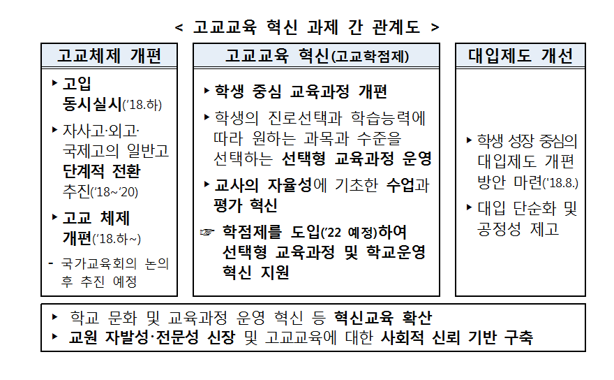
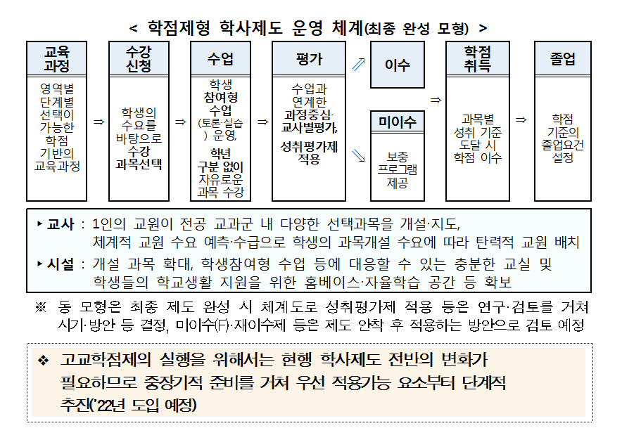
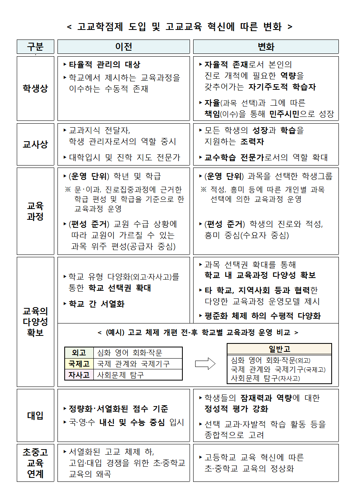
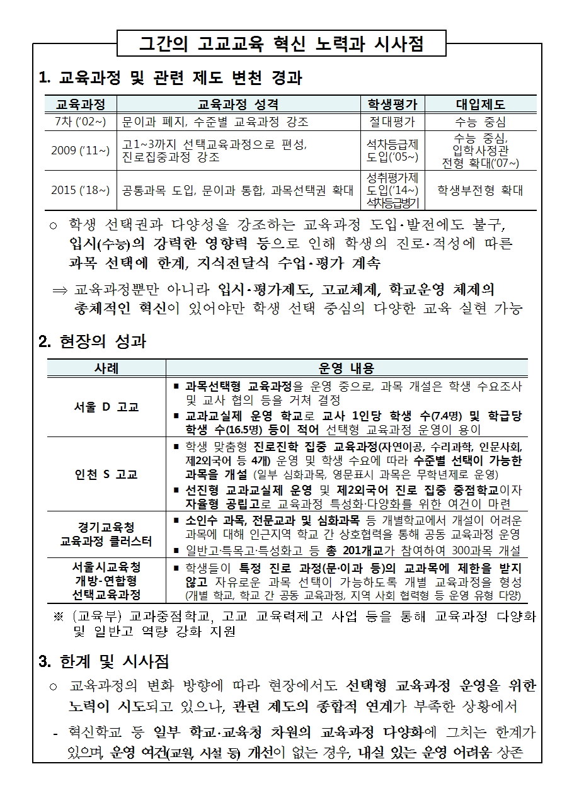
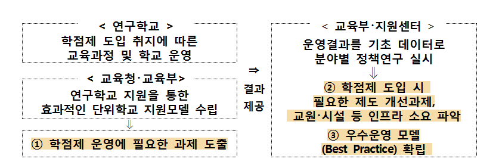
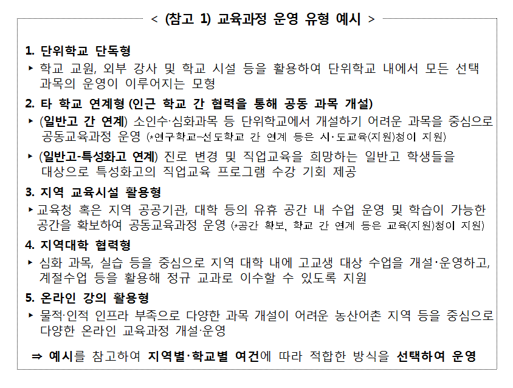
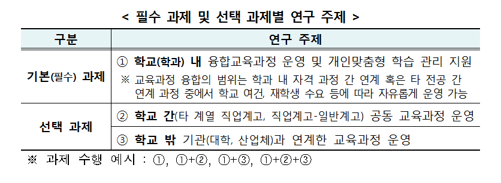
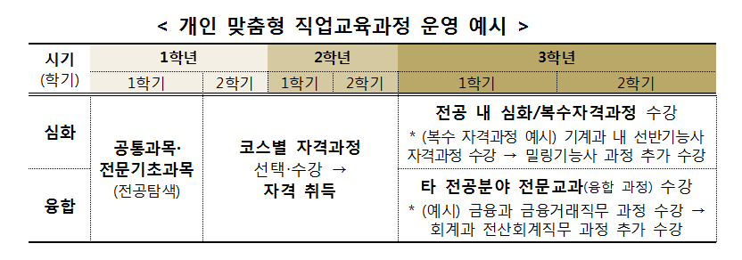

삼일공고 연구학교 운영계획
삼일공고 고교학점제 추진 방향 및
연구학교 운영 계획(교육부)
고교학점제 추진 배경
미래사회 전망에 따른 교육의 역할
4차 산업혁명 시대, 학생 수 급감
우리 교육의 현실 진단
획일적 교육 패러다임 상존,줄 세우기식 평가...
고교교육의 패러다임 전환 요구
입시 중심 → 학생 성장 중심...
고교학점제 도입필요성 및 개념
도입 필요성
학점제의 기본 개념
제도적 요건
고교학점제 도입 준비방안
연구･선도학교 운영 및 학점제 도입 기반 강화
제도 정비를 위한 정책연구 추진
단계적 준비 및 공론화를 거쳐 제도 확산
연구학교 추진계획(안)
기본방향
운영계획
삼일공고 고교학점제 도입 준비를 위한
직업계고 연구학교 운영계획
추진 배경
직업교육의 변화 방향
현행 교육체제 진단
(직업계고)학점제 도입 필요성 및 추진방향
학점제 도입 필요성
추진여건
추진방향
연구학교 운영계획
기본방향
운영 계획
학생용 설문조사
학부모용 설문조사
교사용 설문조사
4차 산업혁명 시대 도래
4차 산업혁명 시대 도래에 따라 인공지능이 인간의 지적 노동을 대체하는 등 산업구조 및 사회 전반에 혁명적 변화 예상
2025년에는 40%의 제조업 노동력이 로봇으로 대체될 것으로 예측(’15, BCG)
단순 지식･기술의 습득이 아닌 새로운 가치를 창출할 수 있는 문제해결력, 창의성, 융합적 사고력 등이 중요하게 부각
빠르게 변하는 직업 세계와 고용구조에 적응할 수 있는 진로 개척 역량, 연대･참여의식을 갖춘 시민을 키워내기 위한 교육체제 마련 시급
학생 수 급감
학생 수 급감에 따른 교육 여건의 개선을 미래형 교육 실현을 위한 중요 기회로 활용
모든 학생의 잠재력과 역량을 키울 수 있는 교육을 통해 생산가능인구 감소가 국가 성장동력 저하로 이어지지 않도록 대비
※ ’22년까지 고교 학생 수 31% 감소(’16년 175만명 → ’22년 122만명)
획일적 교육 패러다임 상존
미래 사회에 필요한 인재가 아닌 표준화된 산업사회 인재상을 기준으로 한 획일적 교육 패러다임 상존
특히, 고교교육은 대학입시와 수능에 종속되어 획일적 교육과정 운영(문이과 분반 등)과 국･영․수 위주 암기식 수업이 이루어지는 상황
배움과 성장의 질을 높이는 데 미흡
또한, 줄 세우기식 평가(9등급 산출)에 따라 모든 학생들의 자기주도적 학습을 지원하고 배움과 성장의 질을 높이는 데에도 미흡
지나친 성적 경쟁을 유발하는 한편, 학교의 교육과정 운영이 소수 상위권 학생의 입시 성과를 기준으로 이루어지는 문제도 여전
개별화된 교육을 제공
학생 개개인이 잠재력과 역량을 최대한 발휘할 수 있도록 돕는 개별화된 교육을 제공하지 못함.
교육과정 운영(수업) 및 평가권에 대한 교사의 자율성과 전문성도 충분히 존중받지 못하는 한계 지속
서열화된 고교 입시
아울러, 고교체제 다양화의 결과로 나타난 서열화된 고교 입시로 인해 초･중학교 교육까지 왜곡되고 사교육이 확대되는 한편,
대다수 일반고의 학력과 학습 의욕 저하로 공교육의 위기가 증폭되고 교육과정과 학교의 혁신을 위한 현장의 동력 약화
입시 중심에서 학생 성장 중심
입시･경쟁 중심 교육에서 벗어나 모든 학생의 진로 개척 역량 함양을 지원하는 고교교육 본연의 기능 회복
교육과정을 학생이 선택하고 그에 따른 책임을 지도록 하여, 학습 동기를 부여하고 자기주도적 학습자로의 성장 견인
또한, 수업･평가에 대한 교사의 자율성을 강화하는 동시에 성취기준을 준거로 모든 학생의 학습의 질을 보장하는 책임교육 실현
경직적이고 획일적인 교육에서 유연하고 개별화된 교육
입시･수능 준비에 초점을 둔 교육과정 운영이 아닌 모든 학생의 진로 설계와 성장을 돕는 학생 맞춤형 교육과정 운영
실질적 선택권을 보장하는 선택형 교육과정 운영을 통해 학생 개개인에게 필요한 교육 제공
학교 안팎의 자원을 활용하고, 학교 간 장벽을 낮춤으로써 교육과정의 다양성과 전문성 확보
수직적 서열화에서 수평적 다양화
학교 유형 다양화가 아닌 개별 학교 내 교육과정 운영 다양화를 통해 평준화된 고교체제의 한계 보완
다양한 능력과 적성을 가진 학생들이 함께 교육받는 가운데서도 역량을 최대한 발휘할 수 있도록 지원하는 교육체제 마련
학교 내에서도 제한된 과목 중심의 서열화된 평가체제를 벗어나, 다양한 과목이 개설되고 성취기준을 중심으로 한 평가체제 확립
고교교육의 혁신을 지원하기 위한 종합적 제도 개선방안 마련 필요
고교교육의 패러다임 전환을 위해 고교체제 개편, 수업･평가의 혁신, 대입제도 개선 등의 과제를 종합적으로 연계 추진
특히, 고교체제 개편(고입) 및 대입제도 개선과의 연결고리이자 고교 교육과정 운영 전반의 변화를 촉발하는 기제로서 학점제 추진
단위를 학점으로 전환하는 차원을 넘어 과목 선택권 보장 및 교수학습･평가개선 등 고교교육의 실질적 변화를 가져오는 촉매제 역할
또한, 이러한 교육과정 이수･운영 제도가 대입제도와 연계되도록 함으로써 고교교육 혁신의 동력 확보
학생 선택형 교육과정 운영을 통해 교육의 다양성을 확보함으로써 안정적 고교체제 개편 도모
고교 교육과정 운영 전반을 개선하고 고교교육의 혁신을 지원하기에 가장 적합한 학사제도인 학점제 도입 추진
고교혁신과제간 관계도

진로에 따라 다양한 과목을 선택･이수하고, 누적 학점이 기준에 도달할 경우 졸업을 인정받는 교육과정 이수･운영제도
학점을 기준으로 학사 제도가 설계･운영되며, 세부 운영방식은 학교 운영 여건에 따라 다양
(교육과정) 이수 단위를 학점으로 하여, 학력(자격) 취득을 위한 총 이수학점･필수 이수학점 등 제시
(영역 선택형) 사회･교양･예체능 등 영역별 선택이 필요한 분야의 경우, 과목군 내에서 다양한 과목을 개설
(단계 선택형) 전문자격 과정 및 수학･과학 등 위계성이 강한 과목으로,난이도･학습량 등에 따라 단계를 구분하여 다양한 과목 개설
(평가제도) 학점 취득을 위한 과목별 성취기준 설정 및 수업 중 이루어지는 교사별 평가, 과정 평가의 안착 필요
(졸업제도) 출석 일수를 기준으로 하는 학년 단위 진급･졸업이 아닌 학점을 기준으로 양적･질적 졸업요건 설정
학점학사제도 운영체계
고교학점제 도입 및 고교교육 혁신에 따른 변화
그간의 고교교육 혁신 노력과 시사점



과목 선택권 확대에 중점을 두고 3년 간 학교운영 전반 검토･분석
연구학교를 통해 파악된 애로사항, 제도 개선과제는 제도 개선안에 반영하여 개선․적용하고, 우수사례 발표․확산 등을 통해 일반학교에서 활용할 수 있는 자료 축적 및 시스템 등 마련-정책연구 결과로 나온 제도개선 사항 일부 적용 추진
교원, 시설 등 인프라 소요를 분석하여 확충 지원하는 한편, 전체 학교 확산 시 필요한 인프라 추산 등을 위한 기초자료로 활용
연구학교 추진계획 기본방향

4차 산업혁명에 따른 직업 세계의 급속한 변화에 효과적으로 대응할 수 있는 유연한 직업교육 체제 구축 필요성 확대
단순‧반복 업무는 기계에 의해 대체*됨에 따라 전문적 기술을 갖추고 다양한 기술을 융합하여 새로운 가치를 창출할 수 있는 숙련 인력에 대한 요구가 점차 증대될 것으로 전망
국내 주요직업 400개 중 단순·반복 직무, 인간과 소통이 적은 콘크리트공, 도축업, 조립 등이 인공지능 등에 의해 대체 가능성이 높게 분석(’17.3 한국고용정보원)
중등 직업교육에 대한 초과수요, 산업계 고졸인력에 대한 공급 부족 등 직업교육에 대한 필요성과 중요성은 지속 확대
’15년 직업계고 입학정원 113천명, 입학수요 147천명 → 약34천명 초과수요
’14∼’23년까지 고졸인력 210만명 초과수요 존재(’14년 고용부 중장기 인력수급 전망)
학생들의 수요와 산업 환경의 변화에 대처하기 위한 융복합형, 미래형 전공 및 신산업 분야 전공과정 개설 부족
전통적 학과 구조, 학교(공급자) 중심의 경직된 교육체제로 사회와 학생이 만족하는 양질의 직업교육을 제공하는 데에 한계
기계과 39.7%(230교), 경영･기계과 26.2%(152교), 전자과 25.3%(147교) 특성화고에서 설치, 방송통신과는 2.6%(15교)에 불과
마이스터고, 산학일체형 도제학교 등 직업교육의 현장성을 강화하기 위한 그간의 노력에도 불구
’전문대･산업체 등 외부 학습 기회 및 학습 경험의 체계적 인정 기준이 부족함에 따라 교육과정의 다양화, 전문화 미흡
직업계고 입학정원 감소(‘11년 129천명→’15년 113천명), 일반고-직업계고 간 진로 변경의 제약요인(재학연한 제한, 전･편입학제한 등)으로 원하는 학생 모두에게 충분한 직업교육 기회를 제공하기 어려운 상황
과목 선택권 확대, 수업･평가 혁신 등 입시･경쟁 중심 교육 개선에 초점을 두는 일반계열 고교와는 도입 필요성 및 배경에 차이
경직적인 학과･학교 체제 등의 한계를 극복하고 양질의 직업교육을 제공하기 위한 교육체제로서 학점제에 대한 관심 확대
특히, 미래사회에 필요한 다양한 분야의 전문적인 직업 역량을 갖춘 인재를 양성하기 위해서는 학과 간 장벽 완화가 필수적
또한, 빠르게 변화하는 산업현장 및 직업교육의 수요를 반영할 수 있도록 학교체제 및 교육과정 운영 시스템 유연화 필요
학점제를 도입하여, 학점을 기준으로 학습의 질과 양을 관리하고 다양한 학습 경험의 누적이 학력･자격과 연계되도록 직업교육 혁신
(교육과정) 최소한의 직업 역량을 갖추고 자격을 취득하기 위해 필수적으로 이수해야 하는 교과의 비중이 높은 편
(평가제도) 성취평가제가 ’12년부터 도입･안착되었으며, NCS 과정평가형 자격과정(NCS Level 2~4) 확대 추세
((졸업제도) 진로 변경 및 복수전공을 하는 경우 등 일반계고에 비해 졸업연한 유연화 등 졸업제도 개선에 대한 수요 존재
변화하는 산업･직업 환경에서의 학생 적응력 향상을 지원할 수 있는 교육체제 마련에 중점을 두고, 학사제도 개선 및 인프라 확보 추진
학교 안팎의 자원을 활용하여 다양하고 유연한 직업 교육을 제공할 수 있도록 전공 간･교육기관 간 장벽 완화 등 추진
전공 간·교육기관 간 장벽 완화를 통한 융합형 전문 인력 양성에 중점을 두고, 교육과정 운영과 학교 운영 전반 개선
현장성 높은 직업교육을 위한 외부(대학, 산업체 등) 연계 교육과정을 활성화하고, 이를 토대로 학교밖 학습경험의 인정 방안 모색
연구･선도학교 운영 및 학점제 도입 기반 강화
Back
학점제형 학사제도 구현을 위한 학교의 주요 역할
입학 단계부터 체계적인 진로‧학업 상담을 통해 학생의 자기주도적 학업 설계 및 이에 따른 과목 수강 지원
학생의 수요를 반영하여 학교 내 다양한 선택 과목을 최대한 개설하고, 학교 밖 자원을 활용하여 개별학교 차원에서 개설이 어려운 과목에 대한 수요에 대응
과목별 최소 성취 기준 보장을 위한 체계적 학습 코칭 등 학습의 질 관리 강화
학생별 선택에 따른 개별화된 교육과정의 운영 및 학습‧생활지도 관리가 원활히 이루어질 수 있도록 학교 운영 체제 혁신
연구학교
연구학교(’18~’21)를 통해 학점제 도입에 필요한 제도 개선사항 발굴 및 인프라 소요 파악, 우수 운영 모델 확산 추진
지역별, 학교 유형별, 규모별 특성을 고려한 다양한 운영 모델 마련 및 학교별 특성에 맞는 지원 사항, 제도 개선 필요 사항 등 발굴
연구학교 분석 결과의 실효성 및 활용가능성 제고를 위해 시･도교육청･교육부･지원센터의 밀착 분석, 수시 컨설팅 필요
선도학교
교육과정 다양화‧특성화 우수학교, 교육 혁신 경험이 축적된 학교를 지정하여, 현장의 특색 있는 우수 모델 확산
학교의 자발적 참여 의지 및 운영 경험을 토대로 현장의 여건과 특성을 반영한 다양한 운영 모델 발굴, 저변 확대에 초점
일반학교
학점제 도입‧확산에 대비한 고교 전반의 역량 제고 및 저변 확대를 위해 일반고 지원 사업(예 : 고교 교육력 제고 사업 등) 등 행‧재정 지원 강화
학점제 관련 요소(과목 선택권 확대, 학습의 질 관리, 과정 중심 평가)를 사업 과제에 반영하여 학교가 제도를 미리 경험하고 준비할 수 있도록 지원
연구･선도학교 운영결과 및 모형을 제공받아 과목 개설 증가 및 그에 따른 인프라 소요 등 시뮬레이션을 통해 도입 준비
제도 정비를 위한 정책연구 추진
Back
학점제형 학사제도 도입방안 검토
(교육과정) 단위의 학점 전환 및 실질적 선택권(영역별, 수준별) 확대 등 학점제 도입 취지와 운영 방식에 맞는 교육과정 개정방향* 검토
유연한 학사 운영을 위한 적정 이수학점(졸업학점) 및 수업시수, 필수 이수학점 범위, 고시 외 과목 기준의 인정 기준 등
(평가제도) 성취평가제의 대입 반영, 과정중심 평가 등 학생평가 내실화 방안, 학교밖 학습(공동교육과정 등)에 대한 평가기준 등 검토
학생의 과목선택권 활성화를 위해 공동교육과정에서 이수한 교과목은 수강 인원에 관계없이 ‘석차등급’ 미산출하도록 제도 개선 우선 추진(’17.12 훈령 개정 추진)
(졸업제도) 학점을 기준으로 한 졸업기준, 수업 연한(現 3년) 유연화 방안, 학교 밖 학습경험에 관한 학점인정 기준 등 검토
(대입제도) 학생부전형 내실화 방안, 학점제 특성을 반영한 대입전형 설계 및 관리 방안 등 검토
단위학교 지원에 필요한 인프라 소요 파악
(교원 수급) 학생 수요에 따른 추가 개설 과목 규모, 현 교원으로 수용 가능한 수준, 학생 수 감소 추세 등을 종합 고려해 증원 규모 산출
단위학교 교원을 활용하여 확대 가능한 과목 개설범위, 적정한 대체 인력 활용 범위, 농산어촌 교원 확보･배치 방안 등 검토
(시설) 교과교실, 진로활동실, 가변형 교실, 홈베이스 및 자율학습실 등 다양한 형태의 학습 공간을 고려한 장기적 시설 증축 규모 검토
공동 교육과정, 지역사회 연계 교육과정 등의 활성화를 지원하기 위해 학교 밖의 자원을 활용한 추가 교육 시설 확보 방안 마련
(나이스) 학점제 도입에 따른 학사제도 개편 사항 및 학교운영 변화사항(수강신청 등)을 고려한 나이스 기능 개선사항 도출
(교육과정 운영모델 개발) 학교 내 교육과정 다양화 및 학교 밖 교육과정(공동교육과정 및 지역사회연계 교육과정, 온라인 교육과정) 다양화를 위한 효율적 운영모델 개발 및 관련 기반 구축 방안 마련
중장기 교원제도 개선방향 도출
(인력 활용) 연구학교 운영결과를 분석한 효율적인 교사･강사 활용 모델 개발 및 교원 제도 개선방향 검토-순회교사제 활성화, 강사료 현실화‧인력풀 관리, 강사활용 확대 방안 등
(양성) 1인의 교원이 전공 교과군 내에서 다양한 과목을 개설할 수 있도록 교원 양성･임용･연수 제도 전반의 장기 개선방향 검토-현직교원 및 예비교원의 복수자격 취득 활성화 유도 등
(행정업무 경감) 수업･연구 외 잡무를 대폭 경감할 수 있도록 학교의 업무 구조와 문화 혁신*, 행정지원 확대 방안 마련
선택형 교육과정 운영에 따른 교사의 수업 부담 및 교무행정 부담 변화량 분석 및 이에 기반한 제도 개선방향 검토
교사별 동일(평균) 시수 수업, 담임교사의 생활지도 전담 등의 관행적 학교 문화 탈피, 교육과정 중심 학교 업무 체제 개선
단계적 준비 및 공론화를 거쳐 제도 확산
Back
'22년 도입을 목표로 제도 개선 및 인프라 확보 추진
연구학교 운영, 정책연구를 토대로 종합 추진방향 및 세부 실행계획 수립(‘18~’20)
학점제 도입 준비 상황 점검, 학교 현장 의견수렴, 국가교육회의 논의 등을 통해 진행상황 관리･보완
충분한 공론화를 통한 사회 전반의 공감대 확산
학교 및 시‧도교육청 방문, 정책간담회 등을 통해 제도 도입 대비 중점 고려사항에 대한 의견 수렴 진행 등 현장 소통 기회 마련
교원‧학생‧학부모 등 핵심 주체의 정책 이해도 및 참여 의지 제고
종합적인 제도 개선방안을 마련하고 관련 기반을 구축하기 위한 첫 단계로 연구학교를 연차적으로 추진(1차(‘18~’20), 2차(‘19~’21))
운영계획
Back
연구 주제
학점제 도입을 위한 교육과정 및 학교 운영방안 연구
학생 진로 수요를 기반으로, 학생 희망에 따른 과목 개설이
이루어지는 ‘학생 선택형 교육과정 편성･운영(수강 신청제
도입)
학생 흥미･적성을 고려한 진로 탐색 및 그에 따른 자기주도적 학업 설계를 지원하고, 이에 근거한 교육과정 편성･운영
학교 내 교육과정 다양화를 기본으로 하되, 지역별․학교별 여건에 따라 ‘학교 간 연계 교육과정’, ‘지역사회 연계 교육과정’ 동시 활용 가능
학생 개인별 교육과정 운영 및 평가 개선, 기초학력 보장 강화 등 ‘맞춤형 학습 관리 지원’을 통한 학교 책무성 제고
학생의 자기주도적 학습을 지원하는 ‘학습관리, 생활지도 체제 개선 및 학교 문화 혁신’
운영 내용
교육과정 운영 유형 예시
수강 신청제 도입(학생 선택형 교육과정 편성･운영)
(진로‧학업 설계) 진로 상담을 내실화하여 진로와 연계한 학생의 학업 계획서 작성, 이수가 필요한 교과목 등에 대해 체계적으로 안내
의지와 자질이 있는 교사를 학교장이 지정하여 교육과정 지도팀을 구성하고, 진로･학습코칭을 담당하도록 지원(일정 수업 시수 경감)
(교육과정 운영) 학교는 학생 진로를 고려한 다양한 선택 과목을 개설하고, 학생은 직접 수강 신청하여 개인별 시간표 편성
학생의 과목 선택권 확대를 위해 최대한 학교 내에서 다양한 교과를 개설하고, 소인수･심화과목에 한해 공동교육과정, 지역사회 연계 교육과정, 온라인 교육과정 등 개설
학생 수요를 최대한 반영하되, 교원･인프라 등 미수용 원인을 분석하여 향후 인프라 소요 파악 및 운영 모형 개발 시 기초자료로 활용

학생 맞춤형 학습관리 지원
(교육과정 지도) ‘교육과정 지도팀’을 중심으로 학업계획서 및 학습 이력을 토대로 커리큘럼 컨설팅과 개인 시간표 관리 등 지원
-교과 수업뿐만 아니라, 창의적 체험활동(자율활동, 동아리활동, 진로활동 등)도 희망 진로 및 교과 이수 상황과 연계하여 지도･안내
(평가 및 학생부기재 내실화) 객관식 지필평가 비중을 줄이고 수업과 연계한 과정 중심 평가 강화
적성･희망 진로에 따른 과목 수강, 과정 중심 평가결과 등 학생 성장 과정을 학생부(교과 세부특기사항 등)에 충실히 기재
(공강 관리 지원) 개인별 시간표에 따라 공강이 발생할 경우 자기주도적 학습을 지원하고, 학교별 상황에 맞는 생활지도 방안 마련
(기초학력 보장) 성취기준 미달 학생에 대한 별도 학업 보충기회 제공
- 대상 과목과 과목별 성취기준 미달 여부는 교사와 학교가 기초학력 보장 취지에 맞게 자체적으로 판단
운영 계획
Back
연구 주제
직업계고 학점제 도입을 위한 교육과정·학교 운영방안 연구
필수 과제 및 선택 과제별 연구 주제
학교 안팎의 자원을 활용하여 학생의 능력과 직업 현장의 수요에 맞는 다양한 융합형 교육과정 편성·운영
학교(학과) 내 선택과목 다양화를 통한 융합 교육과정 운영은 필수 과제로 수행, 학교·외부기관 연계 교육과정 운영은 선택적 수행
학교(학과) 내 융합 교육과정 운영 및 학습관리 지원 (필수)
(융합 교육과정 운영) NCS 교육과정과 연계하여 학교(학과) 내 다양한 과목을 개설‧운영*하고, 복수전공·자격과정 선택 기회 제공
직무 또는 자격별 직업교육과정(필수/선택) 트랙(코스) 개발 및 교과목 개설
[전공탐색] 학생 진로(성장) 경로에 따른 학습 계획 수립 → 공통과목·전문 기초과목 등 진로탐색과정 이수를 거쳐 희망 전공 선정
[전공과정] 학생의 진로 및 희망 취업 분야에 따른 전공 과정을 선택(과정평가형 자격과정)‧이수하고, 해당 분야 자격 취득
[전공심화·복수전공] 학생의 성취 수준 및 희망에 따라 전공분야 심화과정 또는 他 전공분야 전문교과 수강 기회를 제공
개인 맞춤형 직업교육과정 운영 예시
(이수기준 마련) NCS에 기반한 과정평가형 자격과 연계하여 직업기초능력 신장 방안 및 능력단위별 최소 성취도달 기준 마련
- 교과목 내 NCS 능력단위별로 자격취득과 연계하여 최소 성취기준(P/F) 제시 → 능력단위별 성취기준 미도달(F) 시 재이수 기회 제공
능력단위와 별개로 교과목은 성취기준과 성취수준에 따라 학기 단위로 성취도(A, B, C, D, E)를 평정하여 이수로 인정
보충강좌(재이수 과정)는 방과후, 방학기간 등을 활용하여 개설‧운영
학교 간(직업계고 간, 직업계고-일반계고 간)
공동 교육과정 운영 (선택)
(직업계고 간 연계과정) 융합 교육과정의 범위를 확장하여 타 계열 직업계고 간(공업⇋상업·정보⇋농업 등) 전문교과 교류
학생의 이동거리 최소화, 운영상의 효율성 제고를 위해 공동실습소* 운영이 가능한 거점학교(교육청 지정)를 중심으로 과정 운영
공동실습소(전국 37개소 운영) : 고가의 최신 기자재 지원에 필요한 재정확보 부담으로 지역내 학교간 공동으로 활용할 수 있도록 거점특성화고 내 설치․운영
(일반고 연계) 일반고(학점제 연구‧선도학교 등)와 연계하여 정규교육과정 및 방과후‧방학 등을 활용한 장‧단기 직업교육과정 개설‧운영
해당 직업교육과정 이수 결과를 누적‧인증하여 진로변경을 희망하는 학생들이 원하는 시기 전‧편입학이 가능하도록 지원
일반계고 학생의 직업교육과정 인정 기준‧절차 등에 대한 공통 기준을 마련하고 제도화하기 위한 정책연구의 기초 자료로 활용
학생의 출결상황, 해당과정 이수현황 및 평가 결과 등을 원 소속 학교에 지속 전달‧협의하는 등 체계적 학사관리 체제 마련
학교 밖 기관(대학, 산업체 등)과
연계한 교육과정 운영 (선택)
지역 내 산업체, 대학 등과 연계하여 심화교과 및 자격 취득과정수강을 희망하는 학생들을 대상으로 과목 개설･운영
[산업체 연계] 직업교육의 현장성 및 취업 연계성 제고를 위해 산업체와 공동으로 수업-실습 병행 교육과정*을 설계‧운영
산학일체형 도제학교 기업현장교육(OJT), 산업체기반 현장실습 등을 학점화
[대학 연계] 지역 대학과 협업을 통해 취업과 연계하는 통합교육과정 및 전공 관련 심화과정을 선택‧수강할 수 있는 기회 제공

